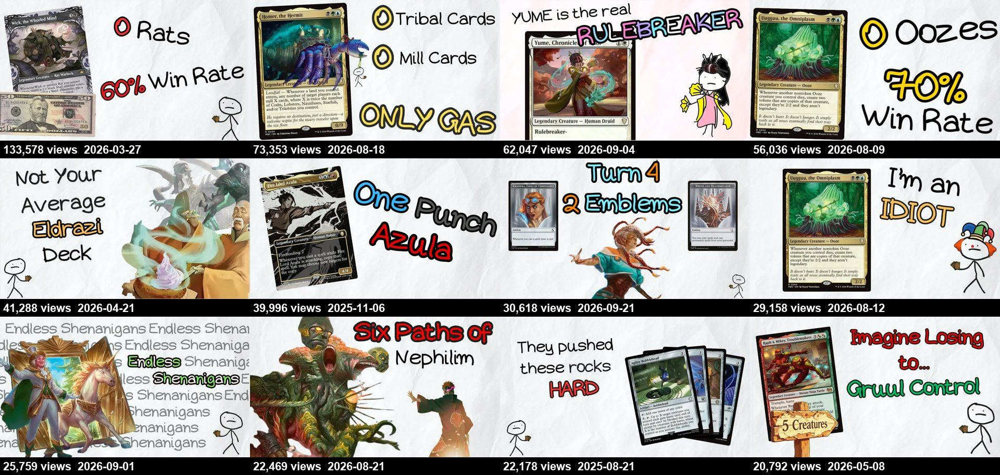
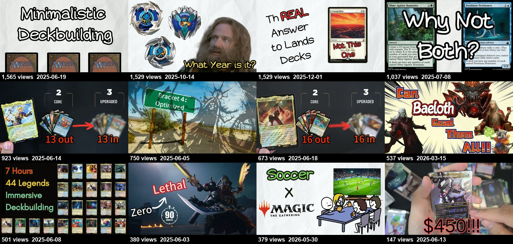
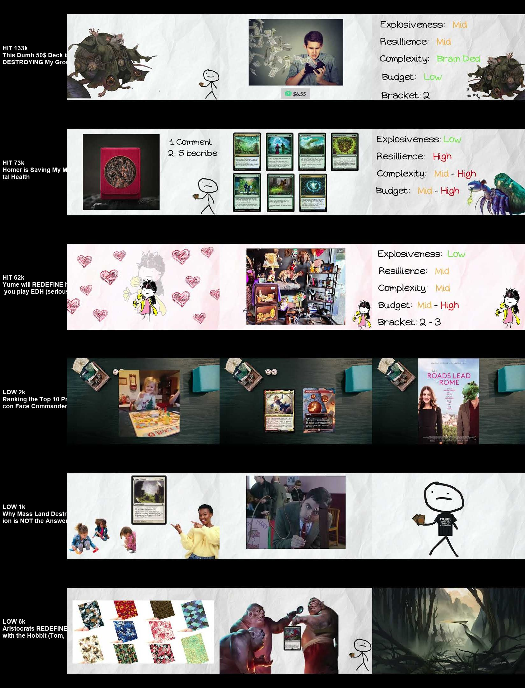

Next Level Commander is 16 months old and has 7,200 subscribers. For its first ten months it struggled: long streams, box openings and hour-long gameplay. Then one $50 deck video did 60× the channel's usual views, and 77% of its lifetime long-form views have come since. Of the three channels studied, this is the closest to where a new channel starts.
The channel dropped 40–400 minute sessions for 8–10 minute deck techs with a fixed structure. The branded series "Commander-Centric Deck Tech" ends every video on the same rating card: explosiveness, resilience, complexity, budget and bracket.
"$50 deck destroying my group" puts a price and a social stake in one line. The follow-ups use the same formula: "LOSING to the same deck for 6 years", "the BEST Silverquill deck is $90".
The highest-median format (16k) tells players their build of a popular new commander is wrong: "People are building UUGGUU Wrong" (56k), "The CORRECT Way to Build Azula" (40k).
Nearly every hit covers a commander from a set that has just been released or spoiled. It's the deck-tech version of Attack on Cardboard's 72-hour rule-change window.
From late 2025, the thumbnails switched to a white-paper, stick-figure, hand-lettered style much like Salubrious Snail's, but with hard numbers: "0 Rats · 60% Win Rate", "0 Oozes · 70% Win Rate", "Turn 4 · 2 Emblems".
June 2025 had 15 uploads with a median length of 40 minutes, including a 7-hour "build every Final Fantasy commander" session. Those uploads have a median of 1.6k views. From July, the channel moved to 8-minute guides and deck techs and settled around 3–5k. In January and February 2026 it detoured into a 60–70 minute gameplay series (537–2k) and nearly stopped uploading. The $50 deck video landed in March, and after a July with no uploads, August and September brought 12 videos with medians of 22k and 26k.
| Date | Views | Format | Title |
|---|
Every format under 15 minutes beats every long session. Among the short videos, the ones that tell you something is wrong or set a price and a stake outperform neutral deck showcases and general strategy guides. Meme videos ("1 Hour UUGGUU Sounds", a POV skit) flopped even when they rode a hit.
Early thumbnails were all over the place: dark tabletop photos, card grids, "13 out / 13 in" upgrade graphics, a film-still meme, and a hand holding a box with "$450!!!". The hits all share one look: a white paper background, one card scan, a stick figure (or the channel's own drawing of the commander), and two or three coloured hand-lettered lines built around a number.


These frames come from 25%, 50% and 75% of the way through each video. All three hits show the same end-of-video rating card, scoring explosiveness, resilience, complexity, budget and bracket in traffic-light colours. That's a signature segment viewers wait for and argue about in the comments. The commanders get their own hand-drawn stick versions, like the Yume figure. The low performers use a dark tabletop, stock photos and film stills, with no recurring elements.

The hits open with a stake, a character voice or a parody. The flops open with a general topic.
My group is being destroyed by this $50 deck and it's so stupid.This Dumb $50 Deck is DESTROYING My Group
People are playing Azula wrong. Well, kind of. Imagine being my friend Jimmy…The CORRECT Way to Build Azula
Opens on a parody of a show's famous intro narration, cut off mid-line with a joke.Is Monk Gyatso the Most Interesting Eldrazi Commander?
The year is 2025 and we're getting a lot of Magic cards. A lot.How to Evaluate Magic Cards (in EDH)
Mass land destruction has been a contentious topic since the beginning of the format…Why Mass Land Destruction is NOT the Answer
Magic the Gathering is basically football if you don't think about it.POV: You're a MTGtuber and There Hasn't Been a Spoiler for 3 Weeks
The narration keeps getting faster. The median for 5–15 minute videos was 201 words per minute in 2025 and 220 in 2026, and one video hits 247. That's fast even by Salubrious Snail's standards.
The white paper, stick figures, card scans and coloured verdict lettering sit very close to Salubrious Snail's template. That shortcut clearly worked, but it risks the channel reading as a copy. The channel's own drawn versions of each commander are what's distinctive. Lean on those.
The top 10 videos hold 58% of long-form views, and most cover a newly released commander. Miss a set and the channel goes quiet. July 2026 had no uploads, straight after a run of hits.
Thirteen videos of 30+ minutes have a median of 923 views, and the January–March 2026 gameplay series stalled the channel just before its breakout. The audience wants the 8–10 minute version.
"1 Hour UUGGUU Sounds" did 2k in the same week as two UUGGUU videos that did 56k and 29k. The joke lands in the comments, not as a video of its own.
Eight Shorts in total. The "20 Second Deck Tech" series did 5–16k with almost no effort. One per deck tech would be cheap reach.
Inside the videos, stock photos and film stills fill in for jokes. They carry a copyright-claim risk and feel generic next to the channel's own drawings.
One contrast with the other two channels: the quick follow-up "I (also) Built UUGGUU Wrong" did 29k three days after the original. It worked because it was framed as a new "wrong" story, not as an apology.
| Attack on Cardboard | Salubrious Snail | Next Level Commander | |
|---|---|---|---|
| Lane | Rules answers and rules news | Deckbuilding theory essays | New-commander deck techs |
| Age / subscribers | 4 years / 35.7k | 3 years / 99.5k | 16 months / 7.2k |
| Subscribers per 100 views | 0.26 | 0.74 | 0.76 |
| Top-10 share of long-form views | 57% | 32% | 58% |
| Comments per 1,000 views | 5.9 | 2.6 | 7.9 |
| Typical length / pace | 5–10 min, ~155 wpm | 12–20 min, ~205 wpm | 8–10 min, ~220 wpm |
| Calendar hook | Rule changes, tournament drama | None (evergreen ideas) | New set commanders |
| Breakout | Rules explainers, Apr–May 2023 | Concept essays, Q1 2024 | $50 deck, Mar 2026 |
Next Level Commander shows the fastest route of the three: pick one short format, borrow a proven packaging system, attach it to the release calendar, and add stakes (price, playgroup, "you're wrong"). It got Salubrious Snail's loyalty rate at Attack on Cardboard's level of hit-dependence.
View, like and comment counts are lifetime totals scraped with yt-dlp on 24 Sep 2026. Many of the biggest videos are only weeks old and still growing, which inflates the recent medians against older months only partly. Formats were assigned by keyword rules and a 30-minute length cut in analysis/categorize.py, so a few borderline videos could sit in a neighbouring bucket. Captions are YouTube auto-captions, and hook quotes are lightly cleaned. There was no access to CTR, retention, traffic sources or subscriber history.